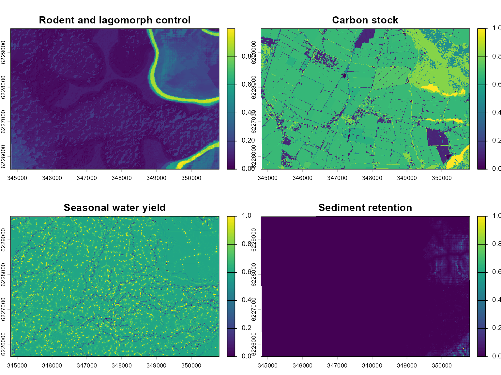
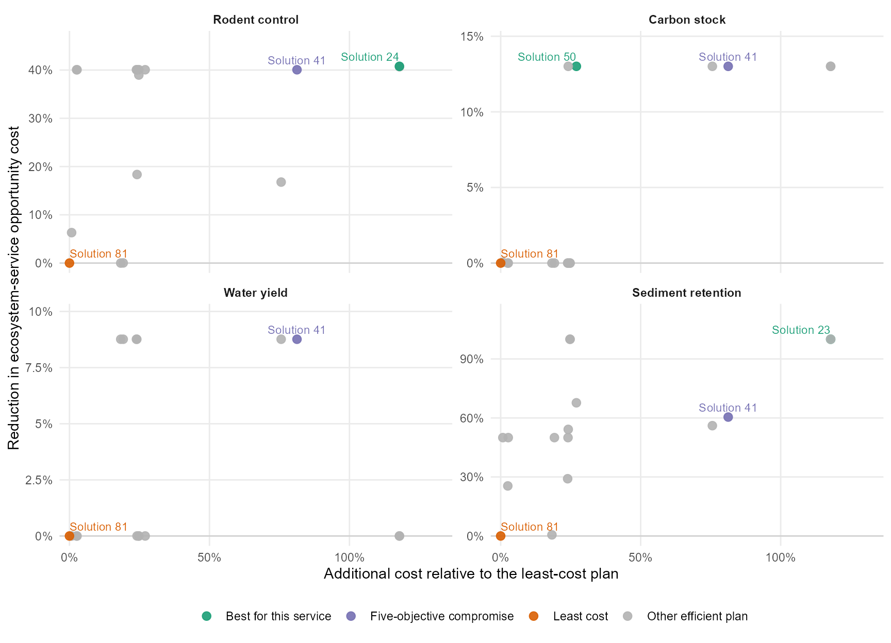
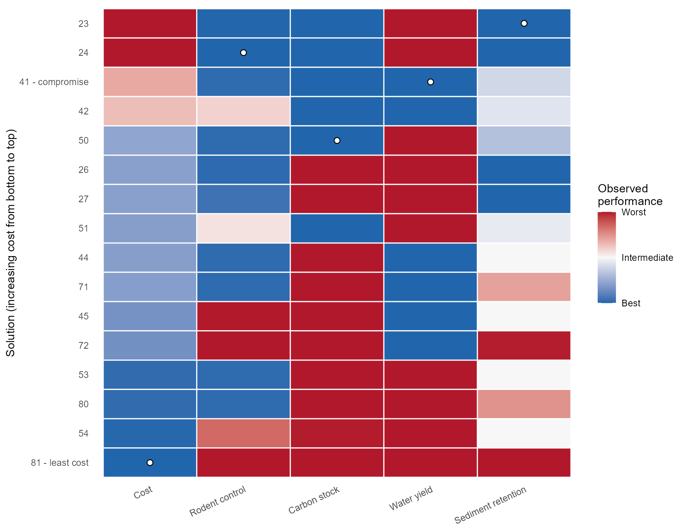
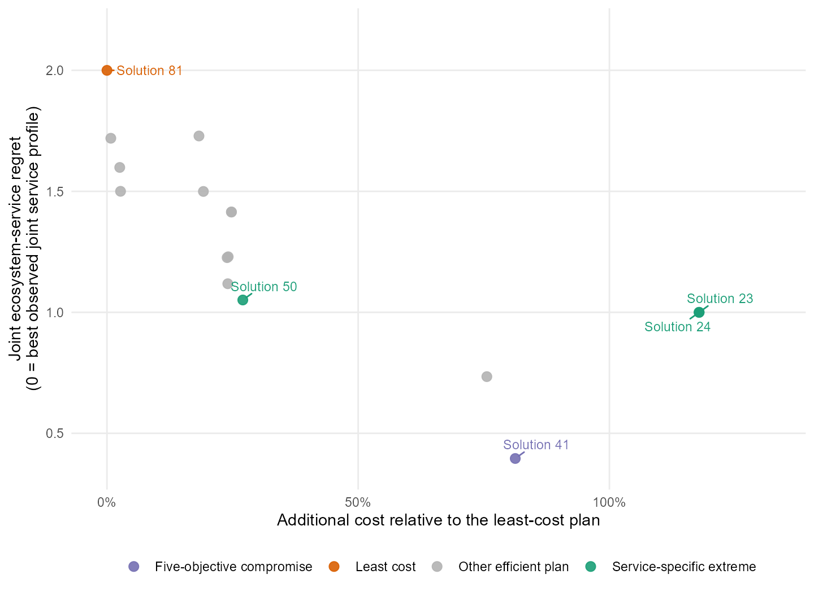
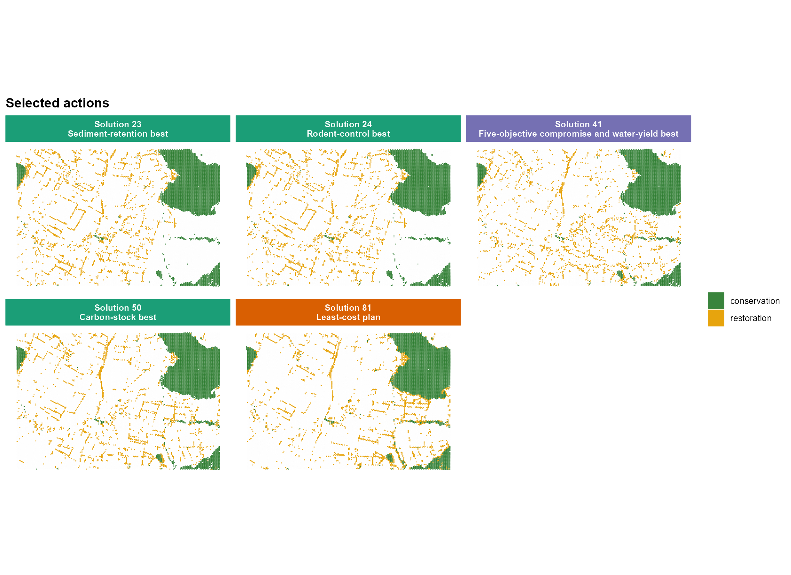
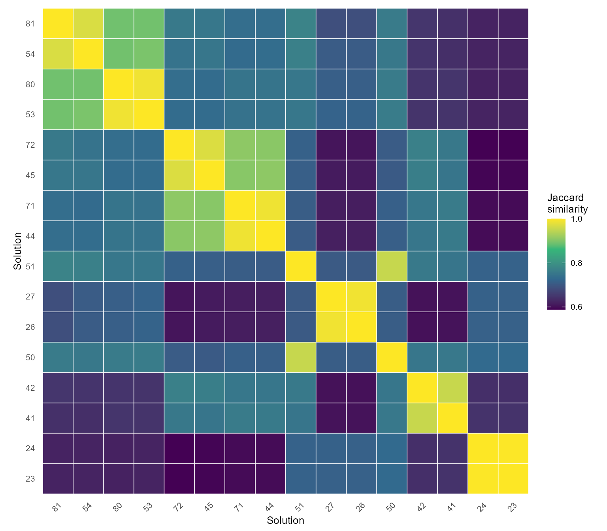

Multi-objective forest restoration planning in a highly productive landscape
Source:vignettes/multiscape.Rmd
multiscape.RmdOverview
Highly productive landscapes provide food and other commodities while also supporting ecosystem services such as biological control, carbon storage, water yield, and sediment retention. Forest restoration in these landscapes therefore involves an opportunity cost: restoring a site may displace existing productive uses or alter places that currently provide high levels of one or more services. Because the services are not spatially congruent, combining them before optimization would conceal conflicts and impose an exchange rate that has not been elicited from decision makers.
This vignette uses multiscape to identify additional
forest-restoration areas around an existing conservation network.
Conservation units are fixed prior commitments rather than choices made
by the optimizer. The decision is where to allocate a fixed amount of
restoration while minimizing its implementation cost and its overlap
with high baseline values of four ecosystem services. Keeping the
services as separate objectives produces five objectives in total and
reveals alternative restoration portfolios rather than a single
composite ranking.
The example is designed to answer the following question:
Where should forest restoration be allocated to meet an area commitment at low implementation cost while avoiding locations that currently provide high levels of multiple ecosystem services?
Planning formulation
Let \(i \in \mathcal{I}_R\) index planning units eligible for restoration and let \(r_i\) equal one when unit \(i\) is selected for forest restoration, and zero otherwise. The existing conservation network is fixed in every solution and therefore provides spatial context without contributing variable terms to the objectives.
The restoration cost is
\[ C(r)=\sum_{i \in \mathcal{I}_R}c_i^R r_i, \]
where \(c_i^R\) is the local implementation cost of restoration. For each ecosystem service \(f\), its restoration opportunity-cost objective is
\[ O_f(r)=\sum_{i \in \mathcal{I}_R}q_{if}r_i, \]
where \(q_{if}\) is the normalized baseline amount of service \(f\) in unit \(i\). Minimizing \(O_f(r)\) directs restoration towards eligible locations with comparatively low baseline provision of that service. It does not imply that these locations have low ecological value in general; it means only that they reduce conflict with the four services represented in this analysis.
The complete objective vector is
\[ \min \left\{ C(r), O_{\mathrm{control}}(r), O_{\mathrm{carbon}}(r), O_{\mathrm{water}}(r), O_{\mathrm{sediment}}(r) \right\}. \]
These objectives characterize where restoration can be placed with
the lowest observed opportunity costs. They do not estimate
ecosystem-service gains caused by restoration, so
add_effects() is not required. An application concerned
with predicted post-restoration benefits would instead specify action
effects and benefit objectives.
Landscape and ecosystem-service data
The highly productive example landscape contains 30,496 planning units and four normalized raster layers. The layers represent rodent and lagomorph control, carbon stock, seasonal water yield, and sediment retention. Values are interpreted on a common 0–1 scale, with larger values indicating greater baseline provision of the corresponding service and therefore greater opportunity cost for restoration.
library(multiscape)
library(dplyr)
library(ggplot2)
library(terra)
data("sim_pu_sf", package = "multiscape")
ecosystem_services <- load_sim_features_raster()
service_labels <- c(
L1_control_inv = "Rodent and lagomorph control",
L1_stock_inv = "Carbon stock",
L1_rend_inv = "Seasonal water yield",
L1_reten_inv = "Sediment retention"
)
nrow(sim_pu_sf)
#> [1] 30496
names(ecosystem_services)
#> [1] "L1_control_inv" "L1_stock_inv" "L1_rend_inv" "L1_reten_inv"The maps below reveal why the services are kept separate. Their spatial patterns overlap only partially, so a restoration allocation with low opportunity cost for one service need not perform well for another.
names(ecosystem_services) <- unname(service_labels[names(ecosystem_services)])
terra::plot(ecosystem_services)
Define the restoration decision context
The planning-unit attributes encode three spatial roles. Units marked
locked_in form the existing conservation network and remain
fixed in every solution. Units that are neither locked in nor locked out
are candidates for forest restoration, whereas locked_out
units are unavailable. The action table retains both labels so that
final maps can show the fixed conservation context together with the
restoration decisions, but only restoration enters the variable
objectives and area commitment.
planning_attributes <- sim_pu_sf |>
sf::st_drop_geometry() |>
select(id, cost, area, locked_in, locked_out)
actions <- data.frame(
id = c("conservation", "restoration"),
name = c("Conservation", "Restoration")
)
conservation_units <- planning_attributes |>
filter(locked_in) |>
transmute(pu = id, action = "conservation")
restoration_units <- planning_attributes |>
filter(!locked_in, !locked_out) |>
transmute(pu = id, action = "restoration")
feasible_actions <- bind_rows(
conservation_units,
restoration_units
)
action_costs <- feasible_actions |>
left_join(
planning_attributes |> select(id, cost),
by = c("pu" = "id")
)
feasible_actions |> count(action)
#> action n
#> 1 conservation 3988
#> 2 restoration 25089This is not a choice between conservation and restoration within each planning unit. Land status fixes the existing conservation component and defines the restoration candidates; the many-objective method chooses only the additional restoration portfolio and exposes its trade-offs among cost and four opportunity-cost objectives.
Build the planning problem
create_problem() aligns the planning units with the four
raster features and stores their baseline amounts.
add_actions() then introduces the feasible action decisions
and their local costs. Planning-unit costs are retained in the base
object for inspection, but the cost objective will use only the explicit
action costs to avoid counting the same cost twice.
problem <- create_problem(
pu = sim_pu_sf,
features = ecosystem_services,
cost = "cost"
) |>
add_actions(
actions = actions,
include_pairs = feasible_actions,
cost = action_costs
)The area requirement is expressed in the units stored in
sim_pu_sf$area. The overall landscape commitment is 20% of
the 30,496 planning units. After subtracting the 3,988 units already
conserved, the optimizer must select 2,112 additional units for forest
restoration. Because all planning units have the same area, an equality
constraint with tolerance smaller than one unit ensures that every
solution contains exactly the same restoration effort. This makes
changes in objective values attributable to spatial reallocation rather
than to different restoration areas. No feature target is required
because the restoration-area constraint defines a non-empty portfolio
and the four services are evaluated as objectives rather than
representation requirements.
unit_area <- stats::median(sim_pu_sf$area)
total_commitment_units <- ceiling(0.20 * nrow(sim_pu_sf))
restoration_target_units <- total_commitment_units - nrow(conservation_units)
restoration_target_area <- restoration_target_units * unit_area
problem <- problem |>
add_constraint_area(
area = restoration_target_area,
sense = "equal",
tolerance = 0.25 * unit_area,
actions = "restoration"
) |>
add_constraint_locked_planning_units(
locked_in = "locked_in",
locked_out = "locked_out"
)Register five restoration objectives
The objectives are registered independently. The cost objective
includes only the explicit costs of the restoration action.
Each ecosystem-service objective is filtered by the same action, so it
sums baseline service amounts only inside the selected restoration
portfolio. The fixed conservation network therefore appears in maps but
contributes no constant term to the values used to compare
solutions.
problem <- problem |>
add_objective_min_cost(
alias = "cost",
include_pu_cost = FALSE,
include_action_cost = TRUE,
actions = "restoration"
) |>
add_objective_min_intervention_impact(
features = "L1_control_inv",
actions = "restoration",
alias = "rodent_control"
) |>
add_objective_min_intervention_impact(
features = "L1_stock_inv",
actions = "restoration",
alias = "carbon_stock"
) |>
add_objective_min_intervention_impact(
features = "L1_rend_inv",
actions = "restoration",
alias = "water_yield"
) |>
add_objective_min_intervention_impact(
features = "L1_reten_inv",
actions = "restoration",
alias = "sediment_retention"
)
print(problem)Generate alternatives with AUGMECON
The purpose of this analysis is to reveal trade-offs before preferences have been elicited. A weighted sum would require exchange weights to be specified in advance and would therefore represent an a priori decision model. Here we use AUGMECON as an a posteriori method: cost is optimized directly, while the four ecosystem-service opportunity-cost objectives are converted into explicit epsilon constraints. The resulting alternatives can be compared before selecting a preferred plan.
set_runs_grid(3) first derives the payoff range of each
secondary objective and then uses its best and worst observed bounds as
epsilon levels. With four secondary objectives, their Cartesian product
contains \(3^4=81\) requested
configurations. This boundary design is intentionally modest for a
vignette with more than 30,000 planning units. It demonstrates the
many-objective workflow without claiming to approximate the complete
Pareto frontier; a real application could add intermediate or
policy-defined levels through set_runs_manual().
Lexicographic anchoring is used when constructing the payoff table, and the AUGMECON augmentation rewards remaining slack after the primary cost objective has been optimized. This reduces weakly efficient solutions in which one criterion improves only negligibly while the remaining criteria deteriorate. Some combinations of stringent epsilon levels can nevertheless be infeasible, which is substantive information about conflicts among the four services.
problem <- problem |>
set_method_augmecon(
primary = "cost",
aliases = objective_aliases,
runs = set_runs_grid(3),
lexicographic = TRUE,
augmentation = 1e-3,
control = set_runs_control(
stop_on_infeasible = FALSE,
stop_on_no_solution = FALSE
)
) |>
set_solver_gurobi(gap_limit = 0)The complete optimization requires Gurobi and a valid licence and
took about 18 minutes on the system used to prepare this vignette.
Repeating that calculation whenever the vignette or package website is
built would be unnecessary. The vignette therefore loads the complete
precomputed SolutionSet directly. This object retains the
spatial decisions, objective values, and run metadata required by all
subsequent multiscape functions.
To regenerate the analysis after changing the problem or method, run
the following code manually from the vignette directory. It is displayed
for reproducibility but is not evaluated during ordinary vignette or
pkgdown builds, which consequently do not require
Gurobi.
Examine the many-objective solution set
Run design and objective values
The resolved run table links each combination of ecosystem-service
thresholds to its stored spatial solution and identifies infeasible
configurations. Several threshold combinations can produce the same
allocation because the attainable portfolios are discrete. We summarize
the complete set of 81 requested configurations, then display only the
runs and objective values retained in the efficient
SolutionSet.
efficient_solutions <- solutions |>
solution_filter(feasible_only = TRUE, nondominated = TRUE) |>
solution_unique(by = "decisions")
run_summary <- data.frame(
requested_configurations = nrow(get_runs(solutions)),
retained_efficient_plans = nrow(get_runs(efficient_solutions))
)
run_summary
#> requested_configurations retained_efficient_plans
#> 1 81 16
get_runs(efficient_solutions)
#> run_id solution_id status runtime gap
#> 1 23 23 optimal 1.2710001 0.000000e+00
#> 2 24 24 optimal 2.1499999 0.000000e+00
#> 3 26 26 optimal 1.0330000 1.060691e-14
#> 4 27 27 optimal 2.2810001 9.624842e-15
#> 5 41 41 optimal 261.4949999 0.000000e+00
#> 6 42 42 optimal 8.2400000 0.000000e+00
#> 7 44 44 optimal 100.7430000 4.346440e-15
#> 8 45 45 optimal 19.3859999 4.729136e-15
#> 9 50 50 optimal 4.0480001 0.000000e+00
#> 10 51 51 optimal 0.9520001 1.184638e-15
#> 11 53 53 optimal 5.0090001 3.818109e-15
#> 12 54 54 optimal 1.1499999 0.000000e+00
#> 13 71 71 optimal 38.7410002 3.362206e-15
#> 14 72 72 optimal 15.8169999 6.628831e-15
#> 15 80 80 optimal 1.5079999 5.496960e-15
#> 16 81 81 optimal 0.3240001 0.000000e+00
get_objectives(efficient_solutions, format = "wide")
#> solution_id cost rodent_control carbon_stock water_yield
#> 1 23 258716.2 1495.492 8711.409 10027.200
#> 2 24 258701.0 1493.568 8711.404 10027.187
#> 3 26 148168.2 1511.004 10014.317 10027.200
#> 4 27 148167.4 1539.062 10014.318 10027.200
#> 5 41 215254.0 1511.468 8711.411 9148.542
#> 6 42 208536.5 2098.464 8711.411 9148.542
#> 7 44 147312.3 1511.469 10014.300 9148.542
#> 8 45 141545.5 2520.960 10014.303 9148.543
#> 9 50 150860.0 1511.470 8711.403 10027.165
#> 10 51 147406.2 2058.816 8711.412 10027.080
#> 11 53 121961.2 1511.469 10014.318 10027.198
#> 12 54 119665.0 2362.490 10009.051 10027.176
#> 13 71 147154.9 1511.467 10014.300 9148.543
#> 14 72 140495.7 2521.595 10014.310 9148.543
#> 15 80 121774.2 1511.470 10014.311 10027.172
#> 16 81 118753.5 2521.662 10014.318 10027.201
#> sediment_retention
#> 1 5.511997e-07
#> 2 7.745541e-07
#> 3 6.396928e-07
#> 4 6.396928e-07
#> 5 2.858626e+01
#> 6 3.174687e+01
#> 7 3.613481e+01
#> 8 3.613296e+01
#> 9 2.334568e+01
#> 10 3.310843e+01
#> 11 3.613522e+01
#> 12 3.613518e+01
#> 13 5.123982e+01
#> 14 7.186292e+01
#> 15 5.388135e+01
#> 16 7.227048e+01The 81 requested threshold configurations are reduced to the unique non-dominated restoration allocations after infeasible or dominated results and repeated decision vectors are removed. This reduction is expected in a discrete spatial problem: nearby epsilon combinations can lead to the same implementable portfolio, while other combinations impose mutually incompatible service limits.
Read the solution set as a sequence of decisions
With five objectives, a matrix of every pairwise projection and a parallel-coordinate plot are complete but cognitively demanding. We instead organize the results around a direct planning question: how much does each ecosystem-service outcome improve when a more expensive plan is accepted? All five objectives are minimized in this formulation. Consequently, an “improvement” means a reduction in restoration opportunity cost relative to the least-cost restoration plan.
How much ecological improvement accompanies additional cost?
Each panel below uses the least-cost plan as the reference point, located at zero on both axes. Moving to the right means accepting additional expenditure; moving upwards means affecting less of the corresponding ecosystem service. The panels deliberately retain separate vertical scales because a one-percent change has a different substantive meaning for each service. A point below zero would indicate that a more expensive plan performs worse than the least-cost plan for that particular service.

The points are not connected because they are discrete portfolios rather than stages along a continuous trajectory. Labels identify the least-cost plan, the five-objective compromise, and the best observed plan for the service in each panel. The same identifiers are used in the heatmap and maps below. The figure should be read horizontally before comparing panels. Plans with similar additional cost can protect different services, while a long movement to the right with little vertical gain indicates declining returns. The graph does not combine services into a single ecological score and therefore keeps the trade-offs visible without requiring the reader to interpret every pairwise objective combination.
Compare the complete performance profile of each plan
The heatmap provides a compact overview of all retained efficient plans. Solutions are ordered from lowest to highest cost. Within each column, values are normalized over the observed efficient set: blue denotes the best observed performance and red the worst. Normalization makes patterns comparable but does not imply that the five objectives have common units or equal policy importance.

White circles mark the best observed plan in each objective column, while the row labels identify the least-cost and compromise solutions. Blue cells across several service columns identify plans that avoid multiple high-value areas simultaneously. Red and blue cells within the same row reveal where a plan exchanges performance among services. The cost column provides a visual reminder that ecologically favourable portfolios need not be the least expensive.
Identify extremes and representative compromises
frontier_extremes() identifies the best and worst
observed plan for every objective. These solutions define the observed
range, but an objective-specific extreme need not provide an acceptable
joint outcome.
extremes <- frontier_extremes(
efficient_solutions,
objectives = objective_aliases,
ties = "first"
)
extremes
#> solution_id objective sense bound role value
#> 1 81 cost min min best 1.187535e+05
#> 2 23 cost min max worst 2.587162e+05
#> 3 24 rodent_control min min best 1.493568e+03
#> 4 81 rodent_control min max worst 2.521662e+03
#> 5 50 carbon_stock min min best 8.711403e+03
#> 6 81 carbon_stock min max worst 1.001432e+04
#> 7 41 water_yield min min best 9.148542e+03
#> 8 81 water_yield min max worst 1.002720e+04
#> 9 23 sediment_retention min min best 5.511997e-07
#> 10 81 sediment_retention min max worst 7.227048e+01For five objectives, a geometric knee based on distance from a
two-dimensional line is not appropriate.
frontier_knee(method = "ideal") instead finds the observed
plan closest to the five-objective ideal after normalizing every
criterion. This is a descriptive compromise within the generated set,
not a universal optimum and not a substitute for stakeholder
preferences.
For visual interpretation, we separately calculate distance to an ecological ideal using only the four ecosystem services. We call this quantity joint ecosystem-service regret: zero would indicate the best observed value for all four services simultaneously, whereas larger values indicate increasing distance from that reference profile. Plotting regret against additional cost keeps ecological performance and expenditure separate. Because every service is normalized to its observed range, the diagnostic gives the four services equal influence and is used to describe the portfolio rather than redefine the optimization problem.
service_distances <- frontier_distances(
efficient_solutions,
objectives = service_aliases,
reference = "ideal"
)
service_distances$cost <- objective_values$cost[
match(service_distances$solution_id, objective_values$solution_id)
]
service_distances$additional_cost <- 100 * (
service_distances$cost / minimum_cost - 1
)
ecological_id <- service_distances$solution_id[
which.min(service_distances$distance_to_ideal)
]
specialist_id <- unname(service_best_ids[["sediment_retention"]])
compromise[, c(
"solution_id",
objective_aliases,
"knee_score",
"knee_rank"
)]
#> solution_id cost rodent_control carbon_stock water_yield sediment_retention
#> 1 41 215254 1511.468 8711.411 9148.542 28.58626
#> knee_score knee_rank
#> 1 0.644435 1
data.frame(
five_objective_compromise = compromise_id,
closest_to_ecological_ideal = ecological_id,
same_solution = compromise_id == ecological_id
)
#> five_objective_compromise closest_to_ecological_ideal same_solution
#> 1 41 41 TRUEIn this experiment, the five-objective compromise and the closest plan to the ecological ideal are both solution 41. The figure below also highlights the best observed plan for each individual ecosystem-service objective. Because solution 41 is simultaneously the water-yield extreme, this produces the same five unique solutions used in the spatial maps. The shared colours connect the figures: orange denotes least cost, magenta the five-objective compromise, and green a service-specific extreme.

Connect objective performance to spatial decisions
The maps include the least-cost plan, the best plan for each ecosystem-service objective, and the five-objective compromise. Because solution 41 is also the best observed plan for water yield, these roles produce five unique maps rather than six. This selection connects every highlighted point in the cost–opportunity-cost figure to a spatial allocation without duplicating the compromise map.
#> role solution_id
#> 1 Least-cost plan 81
#> 2 Five-objective compromise and water-yield best 41
#> 3 Rodent-control best 24
#> 4 Carbon-stock best 50
#> 5 Sediment-retention best 23
#> additional_cost_percent rodent_control_reduction_percent
#> 1 0.0 0.0
#> 2 81.3 40.1
#> 3 117.8 40.8
#> 4 27.0 40.1
#> 5 117.9 40.7
#> carbon_stock_reduction_percent water_yield_reduction_percent
#> 1 0 0.0
#> 2 13 8.8
#> 3 13 0.0
#> 4 13 0.0
#> 5 13 0.0
#> sediment_retention_reduction_percent
#> 1 0.0
#> 2 60.4
#> 3 100.0
#> 4 67.7
#> 5 100.0Positive service values in this table represent reductions in restoration opportunity cost relative to the least-cost plan. The summary provides the numerical context needed to interpret the spatial substitutions shown in the maps.

The maps reveal whether objective-specific improvements arise from small substitutions among nearby planning units or broader changes in restoration placement. Comparing the four service extremes with the least-cost and compromise plans also shows whether different aggregate objectives lead to similar or contrasting spatial prescriptions.
Compare decision-space similarity
Jaccard similarity evaluates overlap in selected planning-unit–action assignments. It complements the objective-space diagnostics by testing whether plans with comparable aggregate performance prescribe comparable spatial decisions. The heatmap follows the same cost ordering used above: darker cells indicate stronger overlap. Values displayed as 1.00 in a rounded table would not necessarily denote identical allocations, because small differences can be hidden by rounding; exact duplicate decision vectors were already removed.

Selection frequency provides a second view of robustness. An action assignment that recurs across many non-dominated solutions is less sensitive to the particular epsilon configuration used in this experiment. Frequency should be interpreted as stability within the generated solution set, not as ecological irreplaceability.
assignment_frequency <- selection_frequency(efficient_solutions)
head(
assignment_frequency[
order(-assignment_frequency$frequency),
],
15
)
#> pu action n_selected n_solutions frequency
#> 83 10075 restoration 16 16 1
#> 109 10099 restoration 16 16 1
#> 196 10180 restoration 16 16 1
#> 198 10182 restoration 16 16 1
#> 226 10208 restoration 16 16 1
#> 227 10209 restoration 16 16 1
#> 283 1026 conservation 16 16 1
#> 338 10314 restoration 16 16 1
#> 387 10360 restoration 16 16 1
#> 388 10361 restoration 16 16 1
#> 646 10605 restoration 16 16 1
#> 651 10610 restoration 16 16 1
#> 786 10736 restoration 16 16 1
#> 840 10786 restoration 16 16 1
#> 978 10919 restoration 16 16 1Interpretation and limitations
This example targets additional forest restoration in a highly productive landscape with an existing conservation network. Conservation is fixed in every solution, while the optimizer reallocates a constant restoration area among eligible sites. Its main methodological contribution is to retain four baseline ecosystem services as separate opportunity-cost objectives, revealing where inexpensive restoration conflicts with the continued provision of particular services.
The formulation does not estimate the ecosystem-service gains generated by forest restoration. It identifies locations where restoration overlaps with comparatively low baseline values of the four services considered. These values should therefore be interpreted as indicators of potential spatial conflict, not as a complete assessment of ecological value or the eventual benefits of restoration. Adding predicted action effects would address a different but complementary planning question.
Finally, the alternatives depend on the epsilon design. The 81 requested boundary configurations provide a transparent first experiment in five-dimensional objective space rather than an exhaustive approximation of the Pareto frontier. Applications intended to support a real decision process should introduce additional policy-relevant thresholds with stakeholders and evaluate whether new restoration plans materially change the conclusions. Preferences enter after these consequences have been presented rather than being embedded beforehand as objective weights.